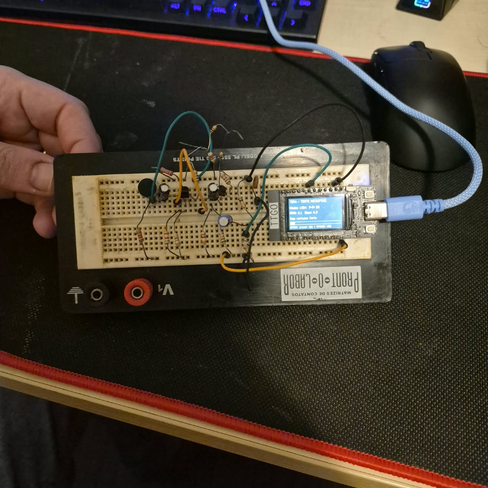

Segure. Fale. Solte.
Grave até dez segundos no GPIO35. A Groq transcreve sua fala e a Tera mostra a resposta na tela.
ALPHA 1.0 / TTGO T-DISPLAY
Conheça a Tera: uma assistente de IA na sua ESP32. Fale pelo microfone, leia na tela e, com o computador conectado, ouça as respostas.
Windows + Python 3.12 · código aberto · chave pessoal de API
01 / CONHEÇA
A placa cuida da interface. A IA e a transcrição acontecem na nuvem; a voz de saída é gerada no computador.
Grave até dez segundos no GPIO35. A Groq transcreve sua fala e a Tera mostra a resposta na tela.
Ouça a voz feminina Dora e peça para abrir calculadora, Bloco de notas, explorador, navegador, GitHub ou YouTube.
Escolha Wi-Fi, API e modelo por USB ou pelo celular na rede temporária da Tera. Sua chave fica na placa.

DA BANCADA PARA A CONVERSA
Este é o protótipo usado no desenvolvimento: TTGO T-Display original e microfone com amplificador discreto. Uma demonstração de integração entre eletrônica, IA e software.
Ver montagem e ligações ↗Foto do protótipo durante um teste anterior do microfone.
02 / COMECE AQUI
Reserve uma pasta no seu computador. A instalação baixa as dependências e o modelo de voz; depois, a voz funciona localmente.
Baixe a Alpha 1.0 e extraia o ZIP em uma pasta sua. Instale Python 3.12 marcando a opção de adicionar ao PATH.
Baixar pacote ZIP ↗Execute instalar.cmd. Ele instala os ambientes Python e a voz Dora. O primeiro download da voz usa aproximadamente 338 MB, além das bibliotecas.
instalar.cmdConecte a placa, encerre aplicativos que usam a porta serial e execute gravar-firmware.cmd. Informe sua porta, por exemplo COM3. O programa atual será substituído; a configuração NVS é preservada.
gravar-firmware.cmdAbra configurar.cmd. Informe Wi-Fi 2,4 GHz, chave Groq e modelo, e salve na placa. Aguarde Wi-Fi e relógio sincronizados para fazer a primeira pergunta.
configurar.cmdO pacote contém scripts e firmware; requer Python. Cada pessoa usa sua chave. APIs gratuitas têm cotas e podem ficar indisponíveis.
Guia completo ↗03 / NO DIA A DIA
Segure GPIO35, fale e solte para enviar. Grave entre meio segundo e dez segundos. Toque GPIO0 para avançar as páginas da resposta.
Com a placa ligada, segure GPIO0 por dois segundos. Conecte à rede TERA-… com a senha na tela e abra http://192.168.4.1. Salve para voltar ao seu Wi-Fi. O portal fecha após dez minutos.
Não segure GPIO0 durante o reset: ele também ativa o modo de gravação.
Deixe o aplicativo ativo para ouvir respostas e abrir programas. O X minimiza; Encerrar assistente fecha. Selecione a voz e clique em Ouvir exemplo. Parar voz interrompe a fala.
“Tera, pode abrir a calculadora?”
Escolha GPT-OSS 120B ou 20B e use Trocar somente o modelo. A escolha fica salva sem reinstalar o firmware. OpenRouter aceita modelos gratuitos para texto; a entrada de voz requer Groq nesta alpha.
04 / DOCUMENTAÇÃO
Uma alpha com recursos reais e limites documentados. Aqui estão as respostas para os pontos mais comuns.
Ver resultados dos testes ↗A placa pode captar fala e mostrar respostas usando Wi-Fi e alimentação, sem PC. A voz de saída e a abertura de aplicativos dependem do Windows com o aplicativo ativo. Não há alto-falante físico instalado.
Você usa sua conta no plano gratuito da Groq ou modelos gratuitos do OpenRouter. Há cotas e limites de capacidade. A Tera não altera o faturamento da conta. Confira seu plano antes de usar.
A chave fica na NVS da placa sem criptografia. Áudio vai para a Groq; perguntas e uma troca anterior vão para o provedor de conversa. A voz de saída é gerada localmente no PC. Não compartilhe dumps da flash.
401 indica chave inválida ou acesso recusado. 429 indica cota ou capacidade: aguarde e confira seus limites. Se o modelo for recusado, escolha outro compatível. Confira também Wi-Fi 2,4 GHz e sincronização do relógio.
Use cabo de dados e driver CP210x. Encerre outros monitores seriais e reconecte a placa se necessário. Para a voz, confira a instalação da Dora, a opção Falar respostas no PC e a saída de áudio do Windows.
Sem teclado físico, alto-falante na placa ou streaming. Gravação de até dez segundos e memória curta de conversa. Comandos usam uma lista definida de aplicativos. Os testes desta alpha não incluem conexão de um celular físico nem uma nova gravação de fala pelo usuário.
ABERTO PARA EXPLORAR
Código, montagem e resultados disponíveis para estudar, experimentar e contribuir.
Baixar Alpha 1.0 ↗Arquivos da versão e SHA-256 ↗